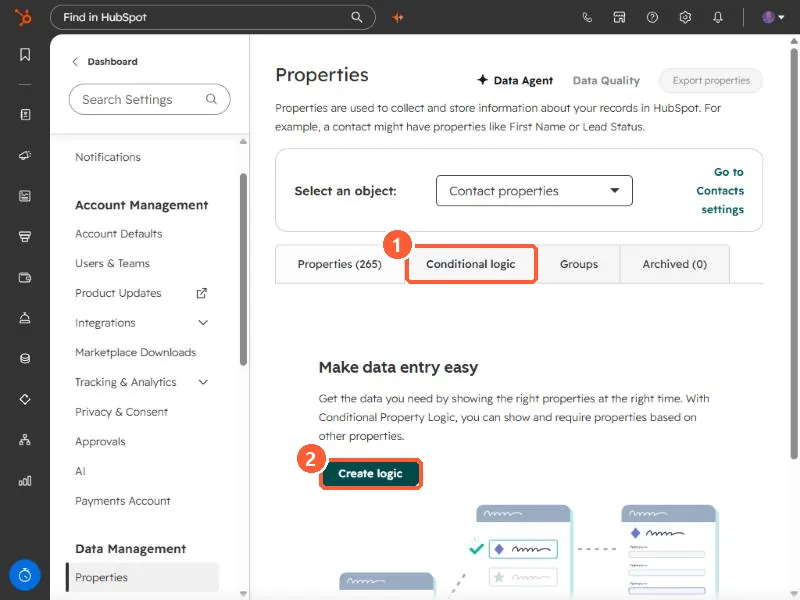

Short answer
In Settings, Properties, pick an object and open the Conditional logic tab, then click Create logic. HubSpot says the logic shows or requires other properties based on a user's input, and it can only be driven by enumeration (such as dropdown select or single checkbox), date, or datetime properties. It applies when people create or edit records by hand. HubSpot says it does not apply when records are edited by other tools, such as workflows. It needs a Professional or Enterprise subscription.
1. Where it lives
Open Properties and click the Conditional logic tab. With no logic yet, the tab says "Make data entry easy" and offers Create logic.


2. What can drive it
- The controlling property must be an enumeration (dropdown select, single checkbox, and similar), a date, or a datetime property.
- The result is that other properties display, or must have a value, once the controlling property has a value you choose.
- A related feature, conditional options, limits which options a dropdown shows based on another property. HubSpot covers it in a separate article.
3. Where it is enforced, and where it is not
HubSpot says the logic applies wherever users manually create or update records: on the record, on the object home page, in the mobile app, and in the HubSpot Sales extension. It does not apply when records are edited with other HubSpot tools, such as workflows.
If a field must always be filled, conditional logic is a guide for people, not a guarantee for data. Check the values that arrive through imports and integrations too.